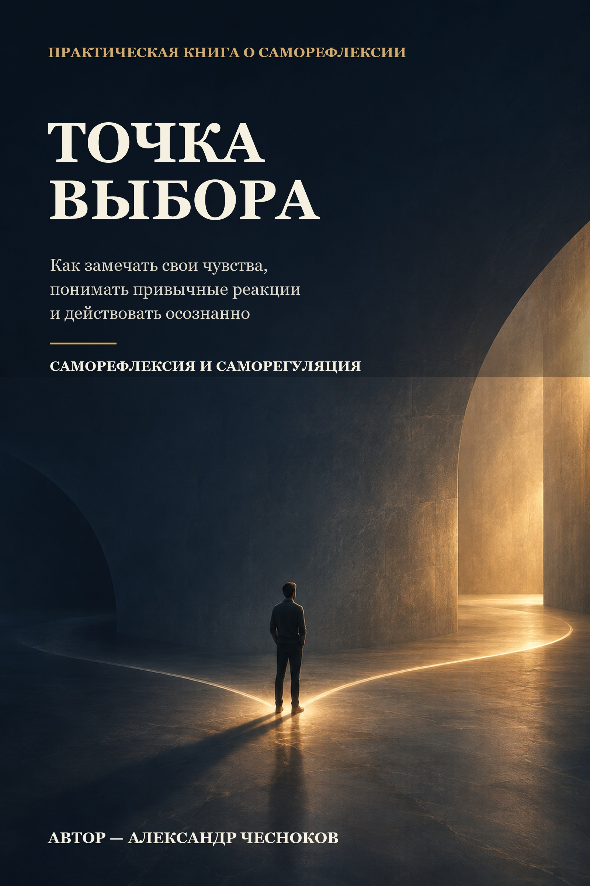

Точка выбора
Практическая книга о том, как замечать свои чувства, понимать автоматические реакции и возвращать себе возможность выбирать действие.

Скачать книгу «Точка выбора» в PDFДля кого эта книга
Для людей, которые многое понимают о себе, но в напряжённых разговорах всё равно автоматически соглашаются, оправдываются, всё переделывают сами или действуют против собственных желаний.
Что вы найдёте внутри
- как отделять событие от собственного предположения;
- как замечать мысли и телесную реакцию;
- как распознавать страх, обиду, вину, стыд, грусть, скуку, одиночество и злость;
- как видеть привычные способы подавления, отрицания, замещения и проекции;
- как развивать навыки саморефлексии и саморегуляции в повседневной жизни.
Об авторе
Александр Чесноков — психолог и предприниматель. В книге он соединяет понятные жизненные ситуации, наблюдение за внутренними реакциями и практические упражнения.
Читать полную версию
Книга бесплатно доступна в электронном формате. PDF подходит для чтения на компьютере, планшете и телефоне.
Скачать полную книгу